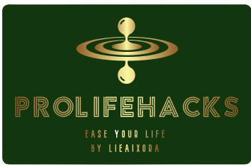

The phrase "prolifehacks" combines the terms "pro" (short for professional) with "life hacks." It is a collection of advice, tactics, and strategies aimed at increasing productivity, efficiency, and general well-being in all facets of life.

Prolifehacks frequently concentrate on practical and actionable solutions that professionals or people may use to improve their daily routines, save time, and achieve their objectives more successfully. These tips can help with time management, organisation, communication, self-care, professional advancement, personal finance, and other things.
The word "prolifehacks" denotes that the advice or solutions given are based on the experiences and insights of experts who have mastered specific elements of their lives. These hacks are designed to give shortcuts, techniques, or novel ways to assist people optimise their own lives and achieve success in their endeavours.
The popularity of prolifehacks stems from the desire to find efficient and effective ways to navigate the complexities of modern life. By incorporating these hacks into daily routines, individuals can strive for greater productivity, well-being, and success in both personal and professional domains.
It's important to note that while prolifehacks can offer valuable insights and suggestions, not every hack may work for everyone or in every situation. It's essential to adapt and customize these tips to suit individual preferences, circumstances, and goals.
It's great to let you know that i enjoy doing life hacks as a hobby during my leisure time. Life hacks are creative solutions or techniques that aim to simplify or improve various aspects of everyday life. Life hacks require me to think outside the box and come up with creative solutions to common challenges. That's really fantastic! Life hacks can be a lot of fun and incredibly useful. They provide me clever and unconventional solutions to everyday problems, making life easier and more efficient. Yall must try!